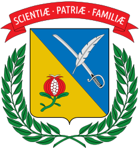

Lenguajes
- Python
- Java
- JavaScript
- TypeScript
- HTML5
- CSS3
- Bash
- Apps Script
Ingeniería de datos · Open source
Mantengo forja, un ecosistema de CLIs en Python publicado en PyPI para hacer scaffolding inteligente de proyectos ETL, lakehouse, streaming y ML. También escribo Java cuando toca y Apps Script cuando es lo más rápido.
Lo que uso día a día. Pasa el cursor para ver el color de cada logo.
Lo que más me ha enseñado. Todo en GitHub, casi todo publicado en PyPI.
Formación académica y programas que han marcado mi camino.

Universidad Militar Nueva Granada

SENA
MinTIC · Universidad Sergio Arboleda
Estoy abierto a colaborar en proyectos open source de datos, oportunidades
y feedback sobre el ecosistema forja.